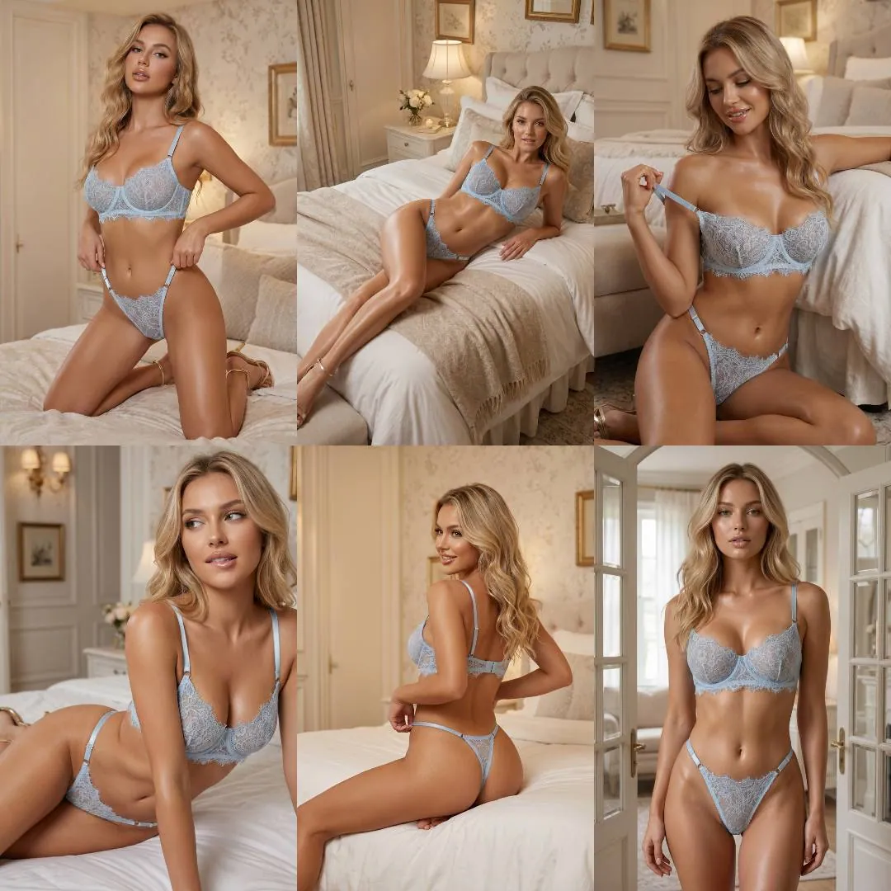
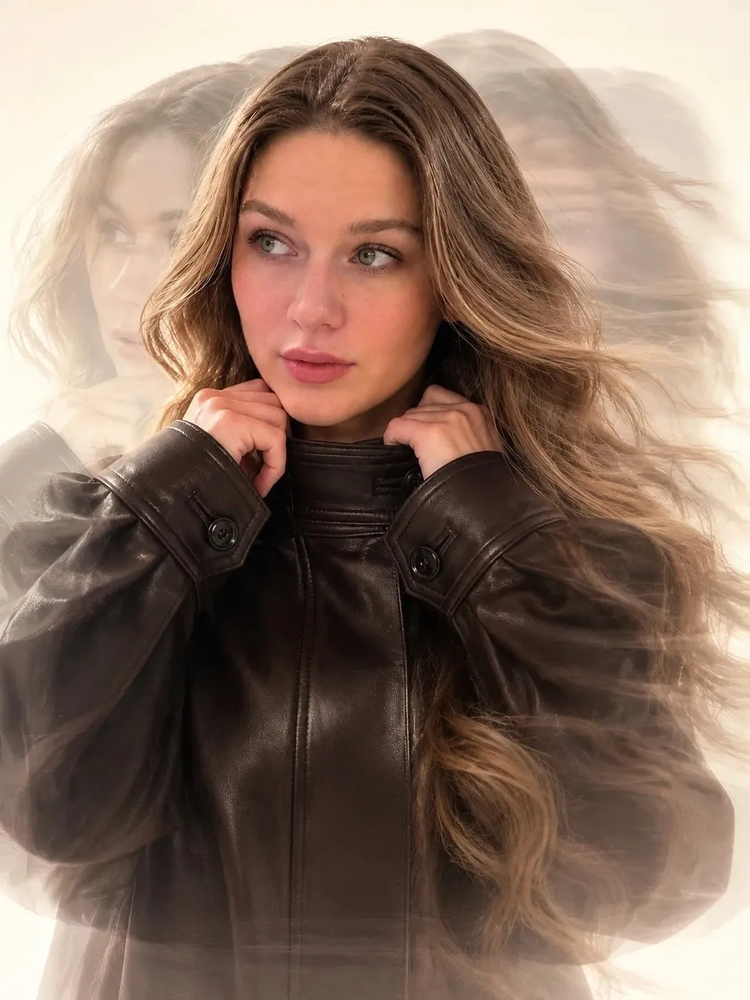
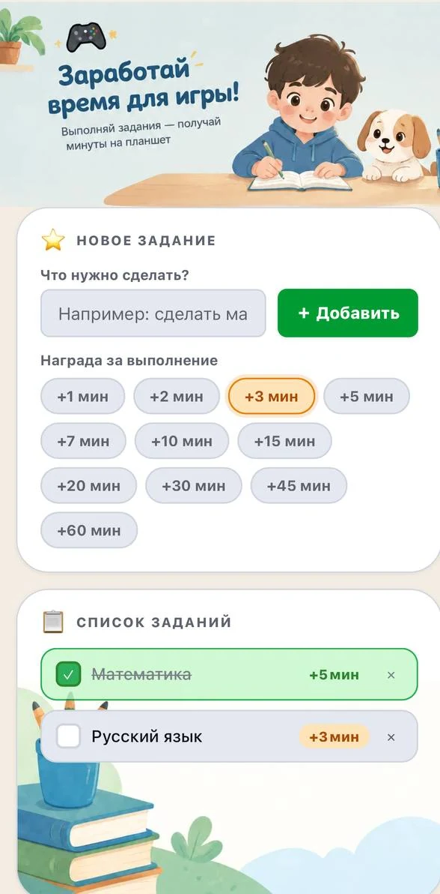

Уроки по работе с нижним бельём
Обучаю создавать для брендов съёмки нижнего белья в нейросетях. Пример урока открывается по ссылке, а идеи и сеты из практики собраны в постах.
Обучающие посты с готовыми креативами, пошаговым разбором и промптом, который можно скопировать. Работаю с брендами и обучаю этому, увлекаюсь креативным видео и вайбкодингом.

Обучаю создавать для брендов съёмки нижнего белья в нейросетях. Пример урока открывается по ссылке, а идеи и сеты из практики собраны в постах.
Пошагово показываю, как сделан ролик: персонажи, сцены, промпты. Пример разбора открывается по ссылке, а пост к нему — здесь.

Я ИИ-креатор. Работаю с брендами и обучаю этому: собираю рекламные кадры, лукбуки, видео и технические эскизы в нейросетях и объясняю, как повторить каждый шаг.
Я разработала приложение для детей и школьников, которое превращает задания в минуты игры: выполняй задания и получай минуты на планшет.
Справа скриншот приложения: нажмите, чтобы увеличить. Само приложение откроется по ссылке.

Пишите по сотрудничеству, работе с брендами и обучению.